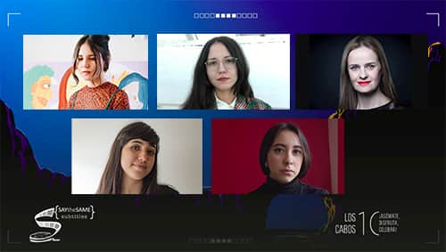
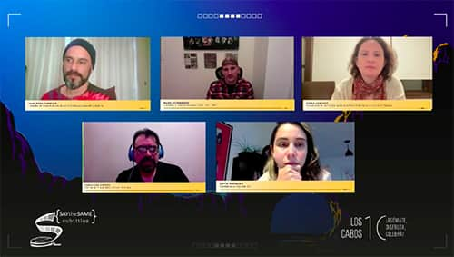
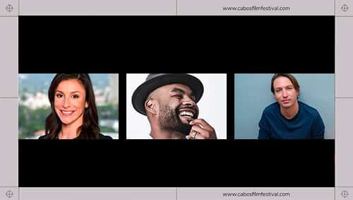
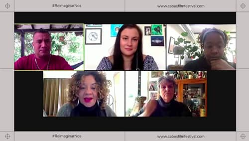
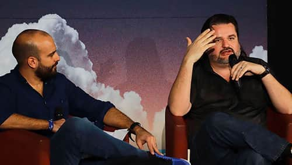
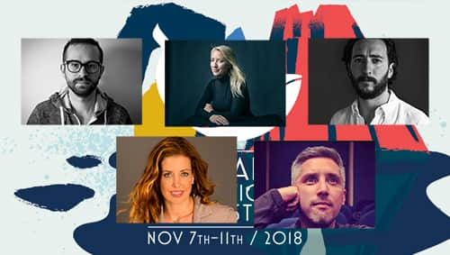

Serie de encuentros profesionales donde diversos especialistas abordan temas de actualidad y su vinculación con el mundo del cine y las artes visuales.
2022

Nuevas señales de cine
Eréndira Ibarra - Actriz, guionista y co-fundadora de Anónima Media (México).
Anthony Svatek - Realizador y artista visual (Estados Unidos).
Diego Nájera - Director de Narrative Films, Participant Media (México).
Claudia Saint-Luce - Guionista, directora y actriz.
Moderadora: Sofía Márquez - Fundadora de la Agencia IDA (México).
2022

Historias efímeras: el cine ante las nuevas audiencias
Mayra Hermosillo - Actriz y realizadora (México).
Faridah Gbadamosi - Programadora Senior del Festival Internacional de Cine de Tribeca (Estados Unidos).
Gastón Pavlovich - CEO de Fábrica de Cine.
Austin Kennedy - Manager de Ventas Internacionales de Magnolia Pictures (Estados Unidos).
Moderador: Arturo Aguilar - Investigador y periodista.
2021
Sin fama ni amistades
Andrea Villalón - Artista visual y fundadora de la plataforma Concha Eléctrica (México).
Florencia Guillén - Artista visual y docente (México).
Nicolasa Ruíz - Directora de cine (México).
Paulina Valencia - Productora (México).
Moderadora: Linda Cruz - Periodista y analista especializada en cine, música y medios audiovisuales (México).
2021
¿El futuro es en línea?
Diana Sánchez - Directora Senior de programación del Festival Internacional de Cine de Toronto (Candá).
Juan Meza Fariello, - Fundador del Festival de Cine de Barrio (Uruguay).
Mark Rosenberg - Fundador del Roof Top Film Festival (Estados Unidos).
Sebastián Casarez - Director de cine (México).
Moderadora: Sofía Márquez - Fundadora de la Agencia IDA (México).
2021

Utopías
Antonio Hernández - Realizador (México).
Damper - Productor musical (Colombia).
Darlene Naponse - Directora y escritora (Canadá).
Fabián Salinas - Productor (México).
Jumko Ogata Aguilar - Escritora y divulgadora de antiracismo (México).
Kim Torres - Directora y guionista (México).
Moderadora: Tatiana García - Productora (México).
2020

Representación trans en el cine contemporáneo
Laverne Cox - Actriz y productora (Estados Unidos).
Daniela Vega - Actriz (Chile).
Javier Braier - Director de casting, productor y manager de actores y actrices (Argentina).
Sam Feder - Director, editor y productor (Estados Unidos).
Ann Thomas - Actriz, cantante, manager de talento y productora (Estados Unidos).
Moderadora: Mara Fortes - Investigadora y curadora de cine y medios audiovisuales (México).
2020
Inclusión y los premios Oscar: una presentación especial de la Academia de Artes y Ciencias Cinematográficas de Estados Unidos
Shawn Finnie - Director Asociado de Difusión y Relaciones de los Miembros de la Academia de Artes y Ciencias Cinematográficas (Estados Unidos).
Meredith Shea - Directora Asociada de Premios y Relaciones de los Miembros de la Academia de Artes y Ciencias Cinematográficas (Estados Unidos).
Nicolás Celis - Productor de cine mexicano y CEO de Pimienta Films.
2020
2020, hacia la transformación de nuestra Industria
David Hernández Palmar - Realizador y productor (Colombia).
Maori Karmael Holmes - Fundadora y directora artística de BlackStar (Estados Unidos).
María Novaro - Directora del Instituto Mexicano de Cinematografía (México).
Tatiana García Altagracia - Productora de cine y medios audiovisuales (México).
2019

Miradas Extraordinarias. Conversación con Agnès Godard, Ashley Connor y María Secco
Agnès Godard - Cinefotógrafa (Francia).
Ashley Connor - Cinefotógrafa (Estados Unidos).
María Secco - Cinefotógrafa (Uruguay).
Moderadora: Fernanda Solórzano - Crítica de cine (México).
2019

La Academia: 364 días al año. Conversación con David Rubin y Lorenza Muñoz.
Presidente de la Academia de las Artes y Ciencias Cinematográficas y director de Casting (Estados Unidos).
Lorenza Muñoz - Directora ejecutiva de Premios y Relaciones con los Miembros de la Academia de Artes y Ciencias Cinematográficas estadounidense (Estados Unidos).
2019
Masterclass, Contar la realidad: el caso de 1994. Conversación con Diego Enrique Osorno
Diego Enrique Osorno - Periodista, escritor y cineasta (México).
Moderador: Carlos Gómez Iniesta - Crítico de cine (México).
2018

Conversación con Piers Handling
Piers Handling - Ex Director Ejecutivo del Festival Internacional de Cine de Toronto (Canadá).
Moderador: Leonardo García-Tsao - Crítico de cine (México).
2018

Del cine a la televisión: las altas y bajas de una industria cambiante
Sesión 1:
Desiree Akhaván - Cineasta (Estados Unidos).
Andrés Baiz - Showrunner, productor ejecutivo y director (Colombia).
Tonya Lewis Lee - Productora ejecutiva (Estados Unidos).
Alex García - Productor (México).
Moderador: Mark Kassen - Fundador de Like Minded Entertainment (Estados Unidos).
2018
Del cine a la televisión: las altas y bajas de una industria cambiante
Sesión 2:
José Manuel Cravioto - Director, creador y showrunner (México).
Miranda De Pencier - Productora y directora (Canadá).
Humberto Hinojosa - Director (México).
Carla González Vargas - Showrunner (México).
Moderador: Arturo Aguilar - Crítico de cine (México).